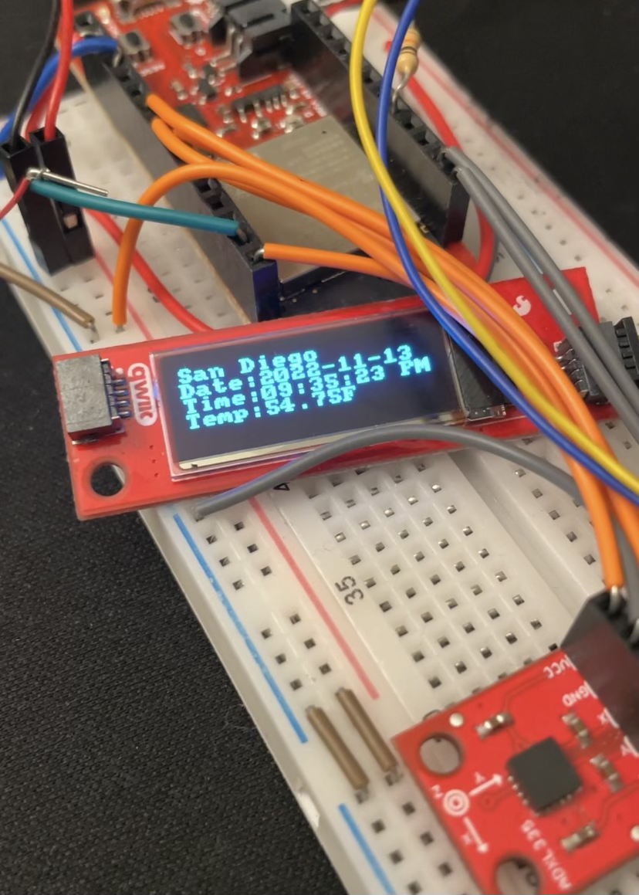

IoT SmartWatch Prototype
I created a smartwatch along with my classmate/partner that shows the
time and weather using a Weather API.
It detects your heartrate from the following analog inputs:
accelerometer and photodetector. This project helped me become more
comfortable interacting with embedded systems.
Languages: Python, C
Type: Class Project
